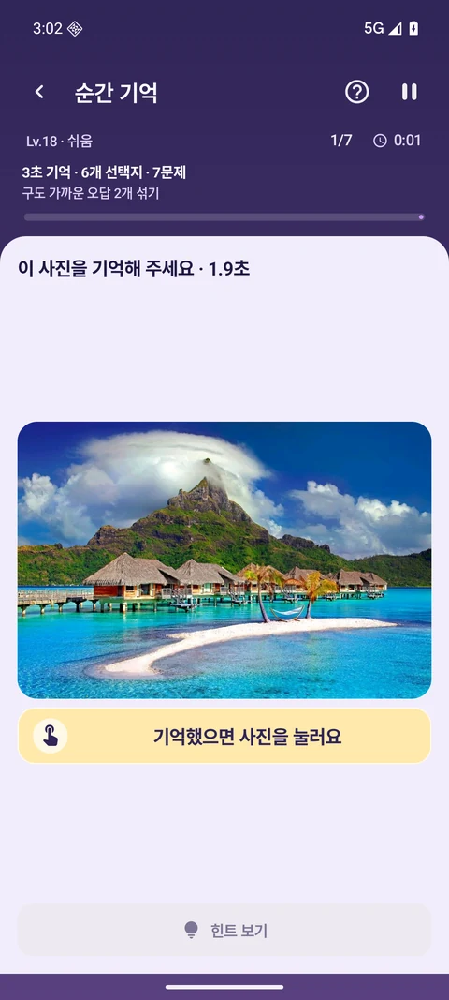
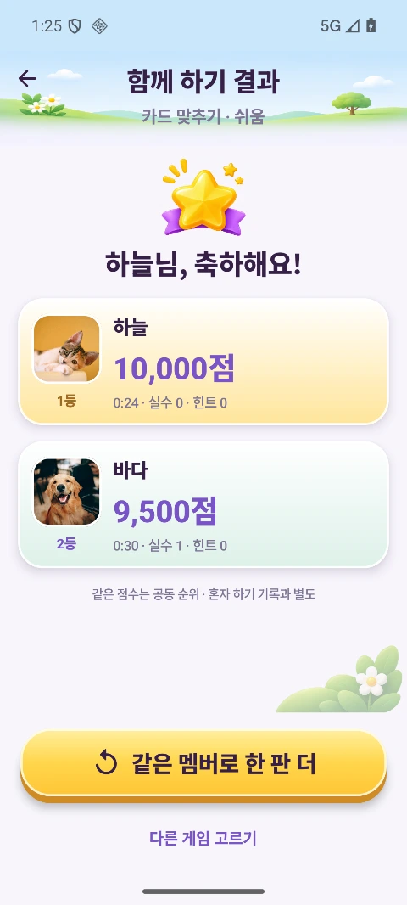
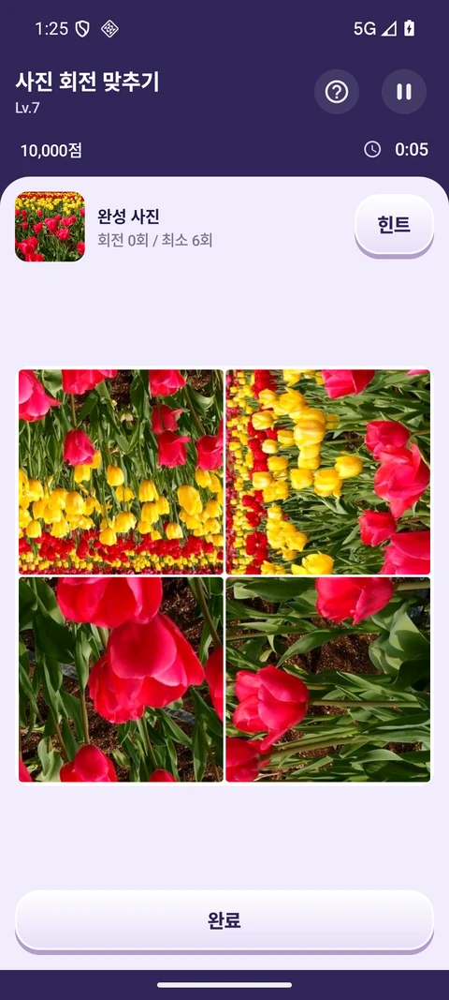
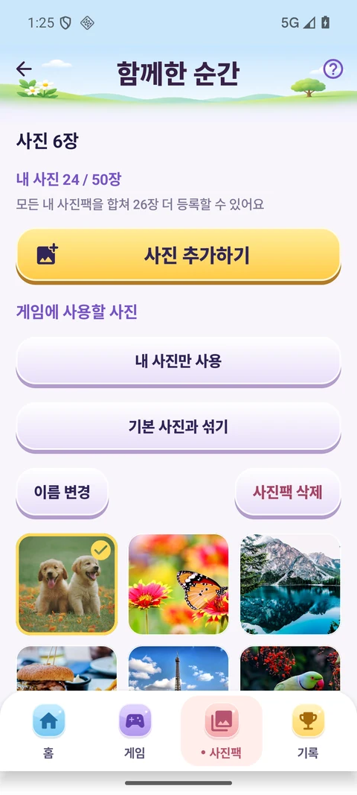
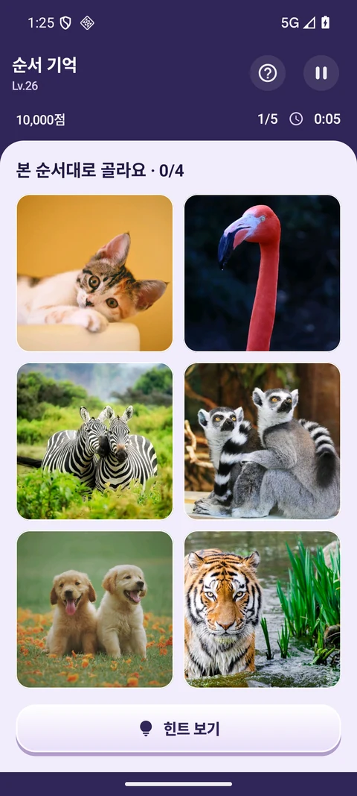

처음 한 판
게임하기에서 8가지 게임 중 하나와 열린 레벨을 고르세요. 물음표 버튼에서 규칙을 확인하고, 필요하면 힌트로 연습해 보세요.
시작하는 순간부터 함께 웃는 결과까지.
사진을 누르면 더 크게 볼 수 있어요.
현재 한국어 앱의 실제 화면입니다. 문제와 점수는 플레이 예시입니다.
게임하기에서 8가지 게임 중 하나와 열린 레벨을 고르세요. 물음표 버튼에서 규칙을 확인하고, 필요하면 힌트로 연습해 보세요.
사진팩에서 이름을 정해 새 팩을 만들고 사진 선택기로 사진을 추가하세요. 내 사진만 쓰거나 기본 사진과 섞을 수 있습니다.
홈의 설정에서 효과음·진동·큰 글씨·동작 줄이기를 조절하세요. 기록 초기화는 레벨·별·사진팩을 남깁니다.















기본 제공 사진으로 촬영한 실제 화면 21장입니다. 함께 하기는 같은 난이도에서 참가자별 다른 문제를 출제합니다.